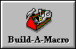
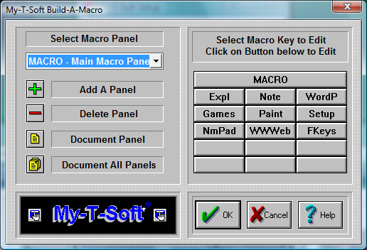

| My-T-Soft®: for Windows; Indestructible Keyboards and Indispensable Utilities; Version 1.80; User's Guide | ||
|---|---|---|
| Prev | Chapter 5. My-T-Soft Setup | Next |

Click on the Build-A-Macro Button.

My-T-Soft lets you create your own Macros to work within Windows and DOS in a Window. In My-T-Soft, a Macro is a sequence of keystrokes or actions tied to a button. The Macro is initiated by selecting the button.
A virtually unlimited number of user-defined panels can be created. Each panel can group keys that support actions such as: Application macros, Commands, Keystroke sequences, names, addresses, pre-defined paragraphs, letters, and even launch Programs.
Click on the Select Macro Panel Pull-down box to choose an existing panel.
Click on Add A Panel to add a new panel.
Click on Delete Panel to delete the current panel.
Click on Document Panel to create documentation for the selected panel.
Click on Document All Panels to create documentation for all Macro Panels.
The selected Macro Panel is displayed on the right. Click on the top button to modify features & properties of the Macro Panel, and click on any button to create / edit the Macro triggered by that button. The Main Macro Panel cannot be deleted, however all of its keys may be changed (except the panel (top) key).
Advanced Notes: The panels included have been setup with various options to help illustrate the functions available. They may be changed or deleted as you desire. When running My-T-Soft, clicking the top panel of the Main Macro panel will open My-T-Soft Setup and go directly to Build-A-Macro. This is useful for fast macro panel / button changes. Macro Panels may be nested up to ten levels. Clicking on the top button of a nested panel will return to the previous panel, which is a shortcut for advanced users. In general, it is better to use a button to indicate the panel to open.
Limitations
There is an upper limit of 2000 characters maintained by the Build-A-Macro section of My-T-Soft. This amount was arbitrarily selected as enough keystrokes to do just about any kind of task. Note that one character can result in as many as 10 keystrokes being required to generate the character via the selected active keyboard layout in Windows. Therefore it is possible that a large amount of text may overflow the 32000 bytes reserved for these macros (i.e. 3 bytes per keystroke x 10 keystrokes x 1000 characters). If these limits are reached during macro operation, the following issues may be relevant:
Not all characters may be generated from the saved Macro
The Shift, Alt, and Ctrl keys may be in an undefined state.
Any additional keystrokes or macros may not operate properly until the Shift, Alt & Ctrl keys are synchronized to the system.
Only characters not represented by the active keyboard layout require may push these limits - either limit the macro character size to under 500 characters, or select a more appropriate keyboard layout for the characters required.
Steps to create a new Macro panel and insert a new Macro.
Click on Add a Panel.
In the new dialog box, add a 5 character identifier, for example Word.
In the Macro Panel Description, enter some information for your own use, for example Word for Windows.
Press the OK Button.
On the right side of the dialog box, a blank Macro panel will appear.
Click on the first button (top left corner).
A new dialog box opens. Here you define your Macro Button.
First, enter a key label, for example Open.
Under Key Description [Quick Help], enter what you would like to appear in the quick help bar on top of My-T-Soft.
Under This Key will... select which option you would like the button to perform.
In this case, you want to launch an application.
Click on Launch an Application.
If you do not know the correct path for your application, find the applications executable file by using the browse button.
Click on the OK Button.
Verify your action.
Steps to create a keystroke Macro.
Press on the next empty button.
Under key label, enter "PreVu".
Under description, enter "Shows a Print Preview".
Click on Activate Keystroke Macro.
Click on Zoom.
Here you will create your keystroke Macro.
Use the up-and-down arrows to select the appropriate keystrokes.
In this case, double-click on Alt-Down to insert the keystroke (i.e. pressing the Alt button down).
Now, double-click on the letter F.
Now, release the Alt button by double-clicking on Alt-Up.
Finally, double-click on the letter v.
This Macro will bring up the Print Preview while running MS Word!
Click on the OK Button.
Verify your action.